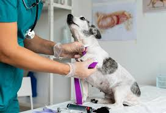

Visitas Veterinarias
Las visitas regulares al veterinario son esenciales para detectar posibles problemas de salud antes de que se agraven. Las revisiones anuales permiten prevenir enfermedades y mantener a tu mascota en buen estado.
Es recomendable llevar a tu mascota al veterinario al menos una vez al año, aunque algunos animales, dependiendo de su edad o estado de salud, pueden necesitar visitas más frecuentes.
Control de Peso
El sobrepeso es un problema común en mascotas que puede derivar en enfermedades graves. Mantén a tu mascota activa y ajusta su alimentación según las recomendaciones del veterinario. Una dieta equilibrada y el ejercicio regular son clave para evitar problemas de salud relacionados con el peso.
Además de la alimentación, es importante monitorear el peso regularmente y adaptar la cantidad de comida según la raza, edad y nivel de actividad de la mascota.
